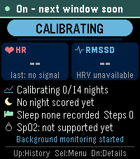

Check in quietly.
By default, a two-minute recording window every 30 minutes, between 23:00 and 07:00. You can change the schedule on the watch.
PERIODIC, NOT CONTINUOUSA QUIET NIGHT SHIFT FOR YOUR PEBBLE
Small overnight measurements.
A baseline that belongs to
you.
A little context when something changes.
Experimental wellness software. Not a diagnosis, a prediction of infection, or an all-clear.

Actual app screen · Emery emulator · v0.1.1
Watch frame is an
illustration.
01 / FROM WRIST TO CONTEXT
Not every pulse interval becomes a measurement. Not every measurement becomes a usable night. And one unusual night is not an alert.
By default, a two-minute recording window every 30 minutes, between 23:00 and 07:00. You can change the schedule on the watch.
PERIODIC, NOT CONTINUOUSMotion, implausible intervals and gaps can invalidate data. HRV needs clean, consecutive pulse intervals, not a guess from heart rate.
QUALITY BEFORE QUANTITYSummarise usable nights. Compare against your own prior eligible nights, rather than a universal good-or-bad heart-rate number.
A PERSONAL REFERENCETwo consecutive, qualifying elevated nights can create one strain episode. A notice describes a change. It cannot explain the cause.
CHANGE, NOT DIAGNOSISA gap is an honest answer. Missing data never becomes a reassuring score. Insufficient coverage stays insufficient coverage.
02 / FOLLOW A SIGNAL
Scrub through an illustrative month. Change the story and see why Sentinel waits, flags a change, or says it doesn’t have enough data.
Two consecutive qualifying nights above your personal reference can create a strain episode.
HRV adds context in the current app. It does not independently trigger these notices.
This is a simplified model of the nightly baseline and episode rules, not the watch software, a live reading, or a health assessment. Sensor gating, storage faults and delivery timing are explained below.
Read the actual rules ↓03 / THE FIELD GUIDE
Sentinel is a separate app. It does its background work without asking you to replace your favourite watchface.
“Is monitoring running?” is not the same as “What does my recent data suggest?”
The background worker’s status. A stopped worker is not a healthy result.
Not enough eligible nights to establish your reference yet.
No qualifying change detected in recently scored data. Not an all-clear.
A qualifying elevation, or a confirmed episode. The cause is unknown.
Recent usable data is absent, or something cannot be read reliably.
04 / UNDER THE SURFACE
The current v0.1.1 rules, in plain language. All thresholds are provisional engineering choices, not clinically validated cut-offs.
The app requests heart rate and optical pulse-to-pulse intervals through Pebble’s public HRV APIs. It does not record raw PPG or an ECG. RMSSD describes successive differences between clean, consecutive intervals. It is not inferred from occasional BPM values.
Default sampling is two minutes every 30 minutes inside 23:00–07:00 local time. Windows and cadence are configurable. Sampling outside the configured night is not continuous background surveillance.
The first 15 seconds are warm-up. The interval filter rejects values outside 300–2000 ms, successive changes over 20%, duplicate deliveries, and intervals contaminated by motion or vibration. Gaps break consecutive runs rather than being stitched together.
A valid HRV window needs motion data, at least 40 accepted successive differences, accepted interval time covering at least half the window, and at most 30% rejected intervals after warm-up. Heart rate can be valid even when HRV is not.
Windows are grouped into hourly bins; the nightly summary is the median of the bin means. A qualifying HR or HRV night needs coverage in at least half the bins and at least three valid windows for that metric. Missing nights are not interpolated.
Only prior, adequately measured, eligible nights within 28 days count. The current night never teaches the app what its own reference should be. Watch and episode nights are excluded from the reference. Recalibration sets a new starting point.
The baseline needs 14 eligible nights. Its centre is the median. Personal variation uses 1.4826 × median absolute deviation, floored at 1.5 bpm for heart rate. The visual band in the demo is a reference guide, not a medical normal range or confidence interval.
An elevated night must be at least 4 bpm above baseline and at least two personal-variation units above it. One qualifying elevated night enters Watch. A second elevated night on the next consecutive calendar night enters Strain. Missing or inadequate nights break that confirmation.
A normal-band night starts recovery; two consecutive normal-band nights complete it. Re-elevation during recovery stays in the same episode, so it does not generate a new episode alert. The app also has long-gap and long-episode safeguards that the short demo does not model.
HRV is supporting context only. A lower-than-usual RMSSD does not independently change the state or trigger a notice. HR and HRV share physiology and optical artifacts; they are not two independent votes.
The worker can open the app, but cannot itself draw a banner or vibrate. Eligible episode launches are scheduled from 30 minutes after your configured night ends, until 21:00 that day, rather than during the recording night.
The app shows the episode card and can vibrate once for a recent worker launch. Quiet Time suppresses that haptic, not the foreground launch. Choose the Silent alert style to avoid the focus change. Muting strain alerts also avoids active strain launches. Pending notices expire rather than producing a late alarm on a later day.
Delivery receipts are saved before external effects to avoid replay after restart. This prefers at-most-once delivery: a crash after the saved claim may lose one notice. The Menu test alert is separately and explicitly labelled synthetic.
Sentinel needs no account, network connection or maintainer-operated server for collection, display or notices. Its compact history stays on the watch. Any optional Pebble Health platform synchronisation is controlled by PebbleOS, not Sentinel. This website has no analytics, tracking scripts or health-data upload. GitHub Pages, the hosting provider, may process standard request information.
The app requires the current Pebble Time 2 heart-rate hardware and firmware supporting the SDK 4.33 HRV APIs. Pebble 2 Duo and Round 2 lack the required sensor. SpO₂ is unavailable in this release. No oxygen value is inferred or invented.
Sensor quality, overnight reliability, constrained worker memory and battery cost need further systematic real-watch testing. Early practical use is not clinical validation. Software updates or another worker can interrupt collection.
05 / WHAT THE SIGNAL DOESN’T SAY
Illness, stress, alcohol, exercise and poor sleep can all affect overnight physiology. Sentinel cannot distinguish them, diagnose infection, estimate your probability of illness, or rule it out.
Trust symptoms and appropriate medical advice over an app’s state.
The overnight-HR approach is inspired by wearable early-warning research, including NightSignal. Published findings from other devices and populations do not establish Sentinel’s accuracy. Alert burden and false positives matter as much as early detection.
Real-time alerting in wearable research Nature Medicine, 2021 ↗Prospective follow-up and practical alert burden JMIR Formative Research, 2024 ↗The public Pebble heart-rate and HRV APIs Pebble developer documentation ↗YOUR WATCH. YOUR REFERENCE.